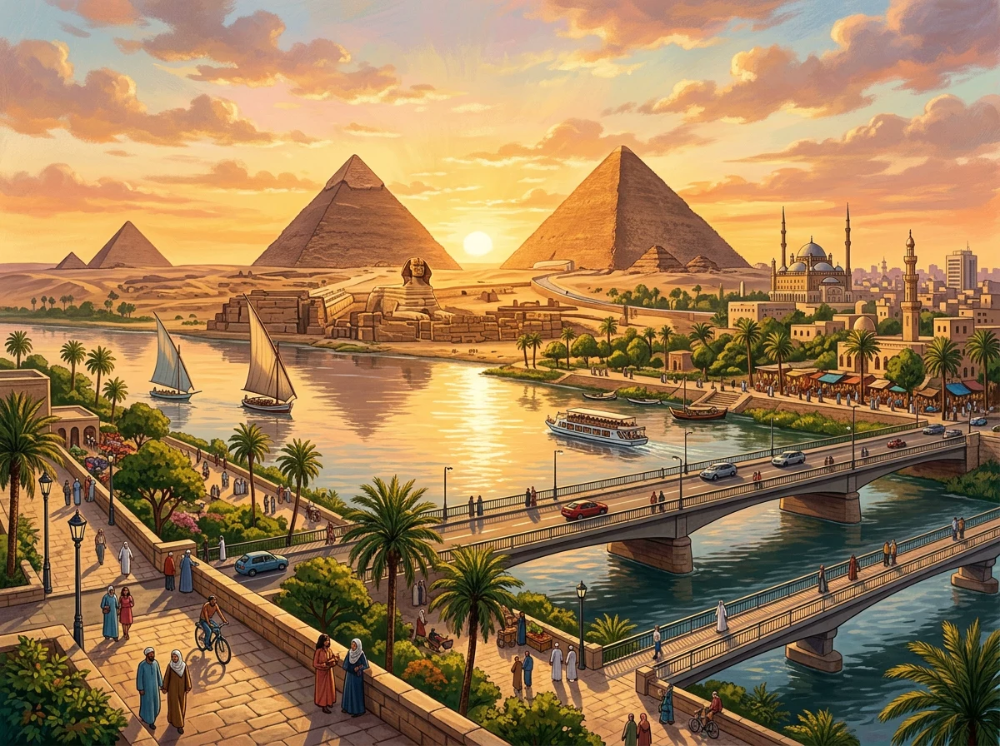

💡 IV. DERIVATIVES & CLEAR THE CONFUSION (المشتقات ودراسة الفروق)
💡 دراسة المشتقات والفروق الدقيقة: عائلات الكلمات (Derivatives) مع أمثلة الجمل من كتاب الطالب، وقسم (لاحظ الفرق - Clear the confusion) لحل أدق أسئلة الامتحانات 🎯.
1. Derivatives (المشتقات وسياقاتها في جمل منهجية)
1. heritage (Root Word)
تُرَاث
heritage (n) - تُرَاث
• We should protect our heritage for the future.
inherit (v) - يَرِث
• We inherit our culture from past generations.
inheritance (n) - مِيرَاث / إِرْث
• Our culture is a valuable inheritance from the past.
inherited (adj) - مَوْرُوث
• Our inherited culture connects us with our ancestors.
2. identity (Root Word)
هُوِيَّة
identify (v) - يُحَدِّد / يَتَعَرَّف عَلَى
• People can identify Egypt through its history.
identity (n) - هُوِيَّة
• History is part of our national identity.
identification (n) - تَحْدِيد / تَعَرُّف
• The identification of our history helps us understand ourselves.
3. merchant (Root Word)
تَاجِر
merchant (n) - تَاجِر
• The merchant sells traditional products in the market.
merchandise (n) - بَضَائِع / سِلَع
• He sells imported merchandise in the market.
merchandise (v) - يُسَوِّق / يَعْرِض لِلْبَيْع
• Shops merchandise their products in an attractive way.
4. monument (Root Word)
أَثَر - نُصْب تِذْكَارِي
monument (n) - أَثَر / نُصْب تِذْكَارِي
• The monument attracts many visitors.
monumental (adj) - ضَخْم / عَظِيم / تَارِيخِي
• This is a monumental building.
5. neighbor (Root Word)
جَار - حَيّ سَكَنِي
neighbor (n) - جَار
• My neighbor keeps the neighborhood clean.
neighborhood (n) - حَيّ سَكَنِي / مُجَاوَرَة
• My neighborhood is clean and quiet.
neighboring (adj) - مُجَاوِر
• People from neighboring streets helped clean the area.
neighborly (adj) - وِدِّيّ / حَسَن الجِوَار
• A neighborly person helps others in the area.
6. preserve (Root Word)
يَحْفَظ - يَصُون
preserve (v) - يَحْفَظ / يَصُون
• We should preserve old buildings.
preservation (n) - حِفْظ / صِيَانَة
• The preservation of old buildings is important.
preserved (adj) - مَحْفُوظ / مُصَان
• The preserved building looks beautiful.
preserving (n) - حِفْظ / صِيَانَة
• Preserving old buildings is important for our heritage.
preservative (n) - مَادَّة حَافِظَة
• A preservative keeps food safe for a longer time.
preservative (adj) - حَافِظ
• A preservative material can protect food from damage.
7. pride (Root Word)
فَخْر - كِبْرِيَاء
pride (n) - فَخْر / كِبْرِيَاء
• We feel pride in our country's history.
proud (adj) - فَخُور
• We are proud of our country's history.
proudly (adv) - بِفَخْر
• We speak proudly about our country's history.
8. restore (Root Word)
يَرْمُم
restore (v) - يَرْمُم
• We restore old buildings carefully.
restoration (n) - تَرْمِيم
• The restoration of old buildings takes time.
restored (adj) - مُرَمَّم
• The restored building looks beautiful.
restorative (adj) - تَرْمِيمِيّ / إِصْلَاحِيّ
• Restorative work helps protect old buildings.
2. Clear the Confusion (لاحظ الفرق موضع أسئلة الامتحان)
1. able to vs capable of
قَادِرٌ عَلَى
💡 القاعدة والاستخدام:
(be) able to + inf. (المصدر): قادر على فعل شيء • She is able to solve the problem.
(be) capable of + n / gerund (اسم أو v-ing): ذو قدرة أو كفاءة على • He is capable of leading the team.
2. agree on / about vs agree to vs agree with
صِيَغ الفِعْل Agree
💡 القاعدة والاستخدام:
agree on / about + noun: يَتَّفِقُ عَلَى موضوع أو خطة أو سعر • They agreed on the price.
agree to + inf. (المصدر): يُوَافِقُ عَلَى القيام بعمل أو مقترح • She agreed to help me.
agree with (someone): يَتَّفِقُ مَعَ شخص أو مع رأيه • I agree with you.
3. along vs across vs through
حروف الجر المكانية
💡 القاعدة والاستخدام:
along (prep/adv): عَلَى طُول / بِمُحَاذَاة (بجانب خط طولي كنهر أو طريق) • We walked along the river.
across (prep/adv): عَبْرَ / مِنْ جَانِبٍ لِآخَر (قطع طريق أو نهر) • She ran across the street.
through (prep): خِلَالَ / عَبْرَ مساحة ثلاثية الأبعاد أو مجسم مغلق كغابة أو نفق • She ran through the forest / tunnel.
4. be proud to vs be proud of vs take pride in
صِيَغ التعبير عن الفخر
💡 القاعدة والاستخدام:
be proud to + inf.: يَفْتَخِرُ أَنْ يفعل كذا • I am proud to represent my school.
be proud of + noun / v-ing: فَخُورٌ بِـ شخص أو شيء • She is proud of her son.
take pride in + noun / v-ing: يَفْتَخِرُ بِـ / يَعْتَزُّ بِـ (pride اسم بعد take) • He takes pride in his work.
5. go shopping vs do the shopping
التسوق الترفيهي مقابل شراء المستلزمات
💡 القاعدة والاستخدام:
go shopping: يَذْهَبُ لِلتَّسَوُّقِ كنشاط عام لشراء ملابس أو تجول ترفيهي • We went shopping for clothes.
do the shopping: يَقُومُ بِالتَّسَوُّقِ الروتيني لشراء طعام ومستلزمات البيت الدورية • I will do the shopping this afternoon.
6. mission vs job vs work
المهام والوظائف والعمل
💡 القاعدة والاستخدام:
mission (n): مُهِمَّة رَسْمِيَّة (تشمل السفر والذهاب لإنجاز هدف إنساني أو عسكري أو استكشافي) • The rescue mission was dangerous.
job (n): وَظِيفَة / عَمَل مُحَدَّد (اسم يُعَدّ Countable وجمعه jobs) • My job is teaching English. / I have several jobs to do.
work (n): عَمَل / مَكَانُ العَمَلِ (اسم لَا يُعَدّ Uncountable) • I have too much work to do. / I go to work by bus.
works (n): أَعْمَال فَنِّيَّة أَوْ أَدَبِيَّة أَوْ هَنْدَسِيَّة (تُعَدّ: a work / works) • Egypt has great works of engineering.
7. remember vs remind
يتذكر ذاتياً مقابل يُذَكِّر غيره
💡 القاعدة والاستخدام:
remember (v): يَتَذَكَّر مِنْ تِلْقَاءِ نَفْسِهِ دون تنبيه من أحد • I always remember my wife's birthday.
remind (v): يُذَكِّر (شخص آخر يجعله يتذكر - remind someone to / of) • Please, remind me to call my mother.
📚 القراءة التفاعلية المصورة (SB Page 12 - Reading Text)
💡 تعليمات القراءة: استمتع بقراءة نص الوحدة من خلال الكتاب التفاعلي. يمكنك تشغيل القارئ الصوتي التلقائي (Auto Storyteller) للاستماع إلى النص ومتابعة الترجمة والمفردات اللغوية لكل مشهد.
🖼️ Scene 1 of 5

A land where the historic past and vibrant present meet in timeless harmony
📖 Egypt's Heritage ReaderPage 1 / 5
Chapter 1: The Beating Heart of History
Egypt is a land with a heart that has been beating for thousands of years. We are proud to call it our home. It is a place where the past and the present meet in harmony.
💡 الترجمة:
مصر أرض ذات قلب ينبض منذ آلاف السنين. نحن فخورون بأن نطلق عليها وطننا وبيتنا. إنها المكان الذي يلتقي فيه الماضي والحاضر في تناغم وانسجام تام.
💡 حوار بين مقدم برنامج "Our Story" وعالمة الآثار د. منى حسن (Dr. Mona Hassan) حول مشروع ترميم معبد فيلة وأهمية حماية تراثنا القومي وإلهام الشباب.
📻 محرك الاستماع الصوتي للمحادثة
🎙️ Host (المذيع):
Welcome back to "Our Story". Today, we're talking to Dr. Mona Hassan, an archaeologist who recently led a team to restore parts of the Philae Temple. Dr. Mona, thank you for joining us.
(أهلاً بكم مجدداً في برنامج "قصتنا". نتحدث اليوم مع الدكتورة منى حسن، وهي عالمة آثار قادت مؤخراً فريقاً لترميم أجزاء من معبد فيلة. دكتورة منى، شكراً لانضمامكِ إلينا.)
🏛️ Dr. Mona Hassan (د. منى حسن):
Thank you. It's a privilege to be here.
(شكراً لك. إنه لشرف عظيم وامتياز أن أكون هنا معكم.)
🎙️ Host (المذيع):
Your work on Philae is a powerful symbol. Can you tell us why preserving our heritage is so important?
(عملكم في معبد فيلة يمثل رمزاً قوياً. هل يمكنكِ إخبارنا لماذا يعد الحفاظ على تراثنا أمراً بالغ الأهمية؟)
🏛️ Dr. Mona Hassan (د. منى حسن):
Of course. When we restore a historical site, we're not just fixing old stones. We're reconnecting with our past. Our ancestors left us a rich legacy—from the pyramids to the temples of Upper Egypt. This heritage is the core of our national identity. It reminds us of who we are, where we came from, and the greatness we are capable of. It's a source of immense pride for every Egyptian.
(بالتأكيد. عندما نقوم بترميم موقع تاريخي، فنحن لا نصلح مجرد أحجار قديمة، بل نعيد الاتصال والتواصل مع ماضينا. لقد ترك لنا أجدادنا إرثاً وتراثاً غنياً—من الأهرامات إلى معابد صعيد مصر. هذا التراث هو جوهر هويتنا الوطنية؛ فهو يذكرنا بمن نكون، ومن أين أتينا، والعظمة التي نحن قادرون على تحقيقها. إنه مصدر فخر هائل لكل مصري.)
🎙️ Host (المذيع):
It sounds like more than a job; it's a mission. What do you think is the biggest challenge to preserving our heritage today?
(يبدو الأمر أكبر من مجرد وظيفة عادية؛ إنها رسالة ومهمة وطنية. ما هو في رأيكِ التحدي الأكبر للحفاظ على تراثنا في وقتنا الحاضر؟)
🏛️ Dr. Mona Hassan (د. منى حسن):
The challenges are many, from urban development to climate change. But perhaps the biggest is a lack of awareness among our youth. Many young people don't realize the value of these treasures. Our job is to inspire them, to make them see that a thousand-year-old temple is not just a tourist attraction—it's a living part of our story. We need to encourage them to visit these sites, to learn the stories, and to feel the connection.
(التحديات كثيرة، من التطور العمراني إلى التغير المناخي. ولكن ربما التحدي الأكبر هو نقص الوعي بين شبابنا. فالعديد من الشباب لا يدركون قيمة هذه الكنوز العظيمة. ومهمتنا هي إلهامهم، ليدركوا أن المعبد الذي يبلغ عمره آلاف السنين ليس مجرد مزار سياحي—بل هو جزء حي من حكايتنا. نحن بحاجة إلى تشجيعهم على زيارة هذه المواقع، وتعلم قصصها، والشعور بالانتماء إليها.)
🎙️ Host (المذيع):
That's a great point. You're inspiring them to become the next generation of protectors. Thank you, for your valuable work, Dr. Mona.
(هذه نقطة ممتازة ورائعة. أنتم تلهمونهم ليصبحوا الجيل القادم من حماة التراث. شكراً جزيلاً لكِ على عملكِ القيّم، دكتورة منى.)
🧠 أهم نقاط الفهم واللغويات من نص الاستماع (Key Takeaways):
Philae Temple: معبد فيلة بأسوان (Upper Egypt)، قادت د. منى فريقاً لترميمه (restore).
Core of National Identity: التراث ليس مجرد أحجار قديمة (old stones)، بل هو جوهر الهوية الوطنية ومصدر فخر هائل (source of immense pride).
Biggest Challenge: التحدي الأكبر لحماية التراث هو نقص الوعي (lack of awareness) بين الشباب (youth).
The Protectors: الهدف هو إلهام الجيل القادم ليصبحوا حماة لتراثهم (the next generation of protectors).
🎯 اختبار تقييم الفهم الشامل (Comprehensive Quiz):
اختر الإجابة الصحيحة من بين الخيارات. يمنحك كل سؤال صحيح 10 نقاط فورية مع المؤثرات الصوتية والتعليل التعليمي 🌟